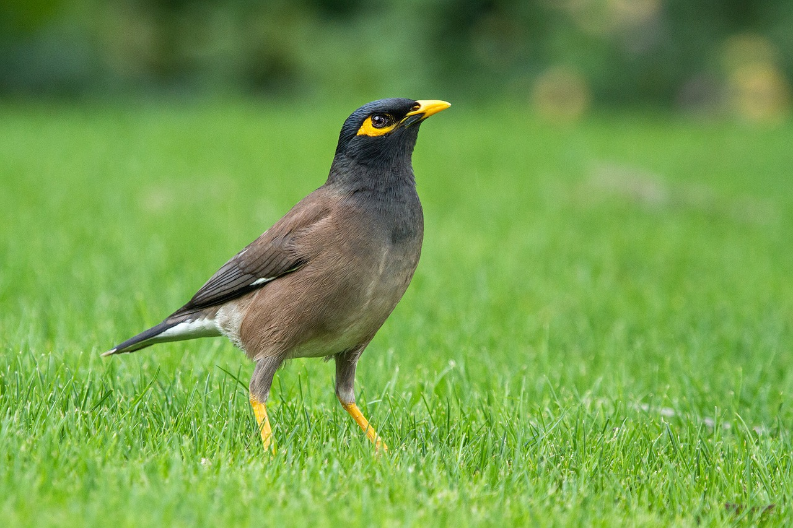
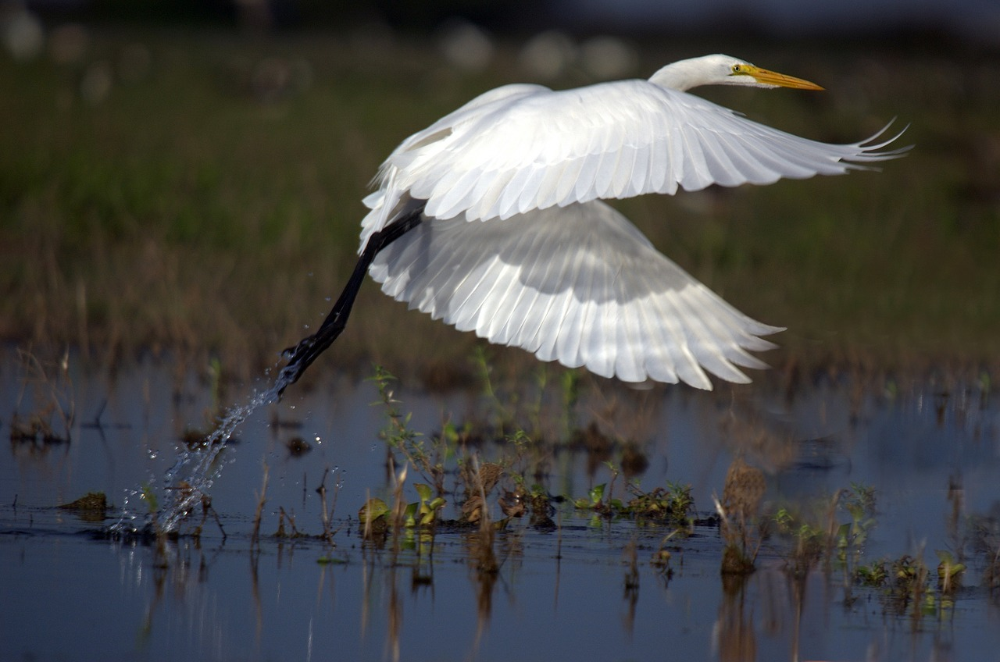
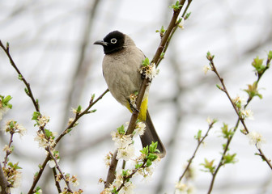
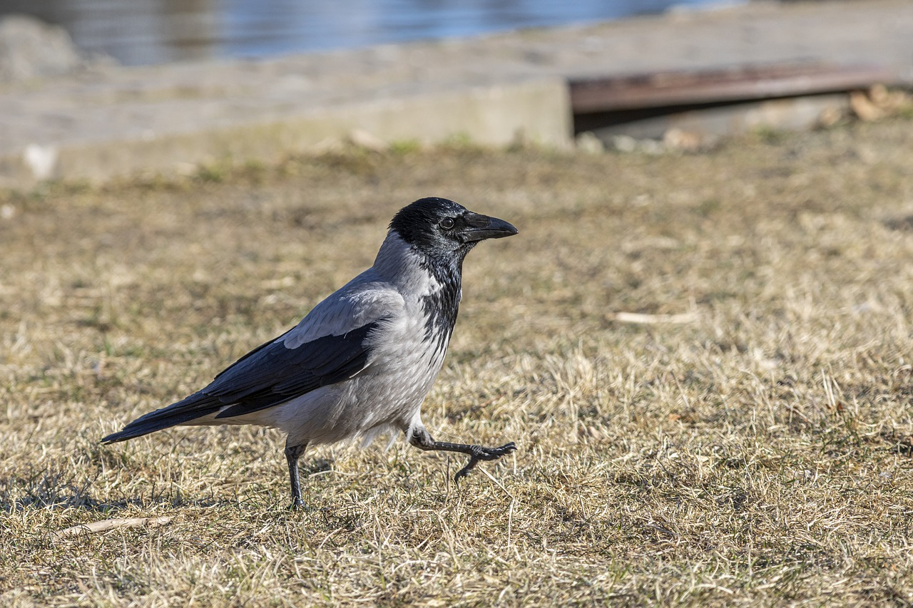
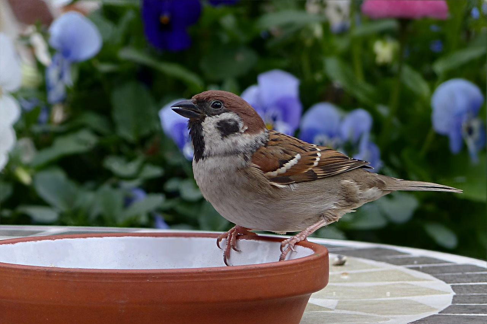
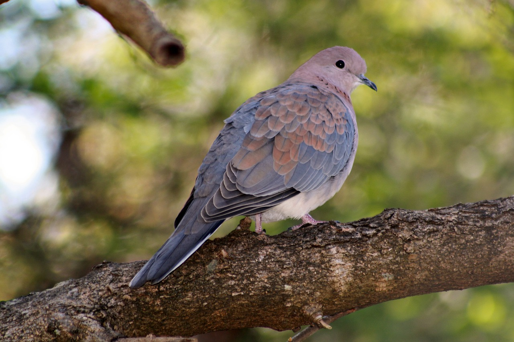
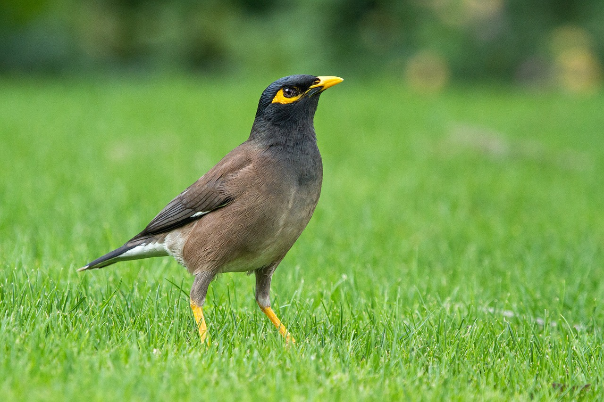
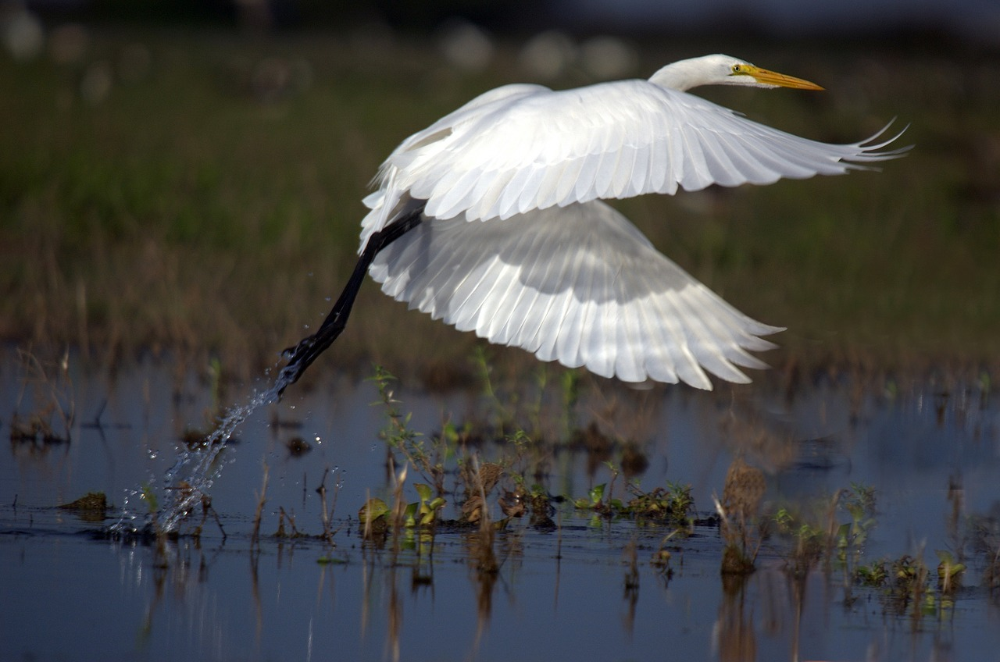
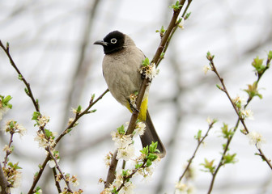
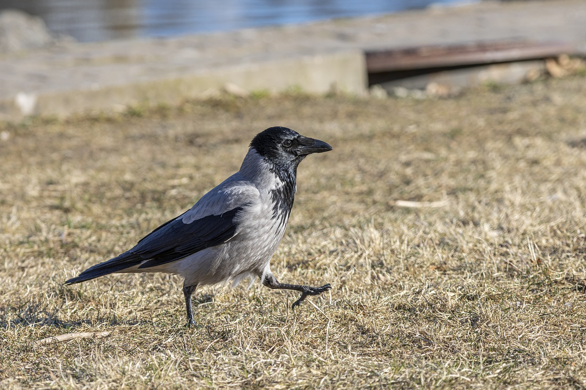
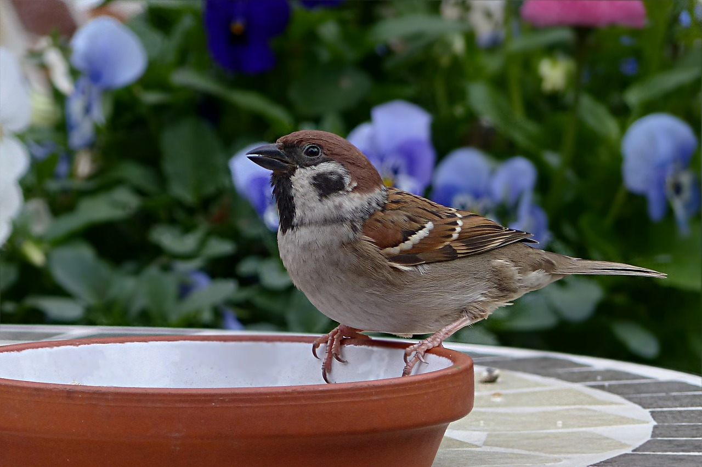
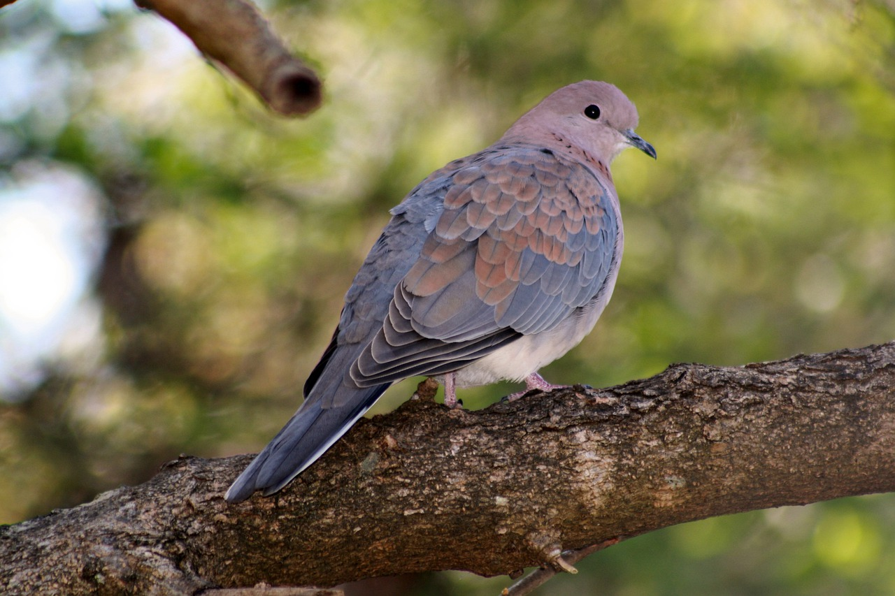
Welcome to my site!
Here you can find an interesting information about Tiberias, a small city near the Sea of Galilee, in the north of Israel.
You can start with reading about the history of the city, or find more information about the beautiful lake, called Kinneret.
Tiberias have not only astonish view and great beaches,
In this city you can also find peace, and just relax and enjoy of listening to the sing of the birds around.
I would like to show you some of the beauty that we see here every day.
If you want to know more details about all this amazing birds,
you can click on the images below.